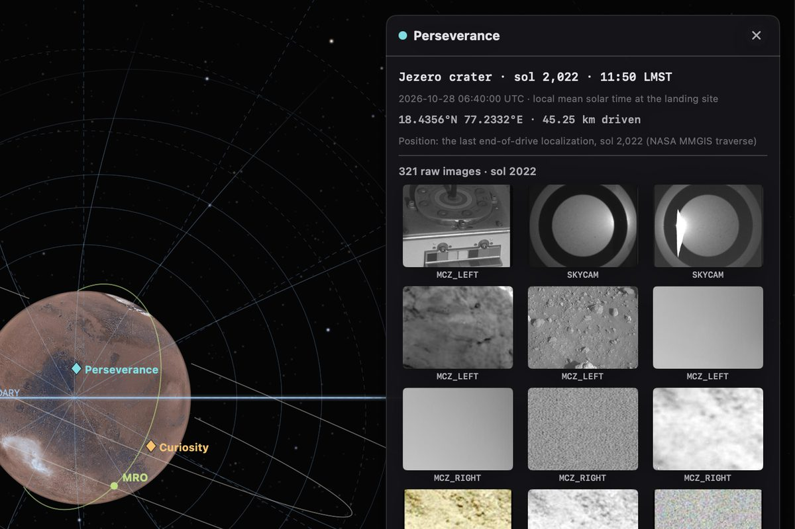
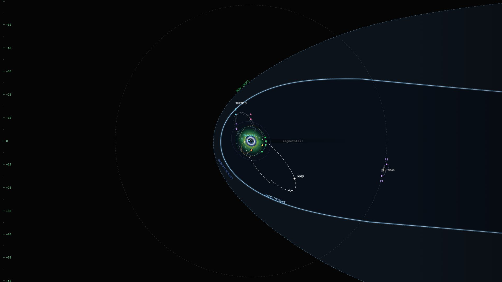
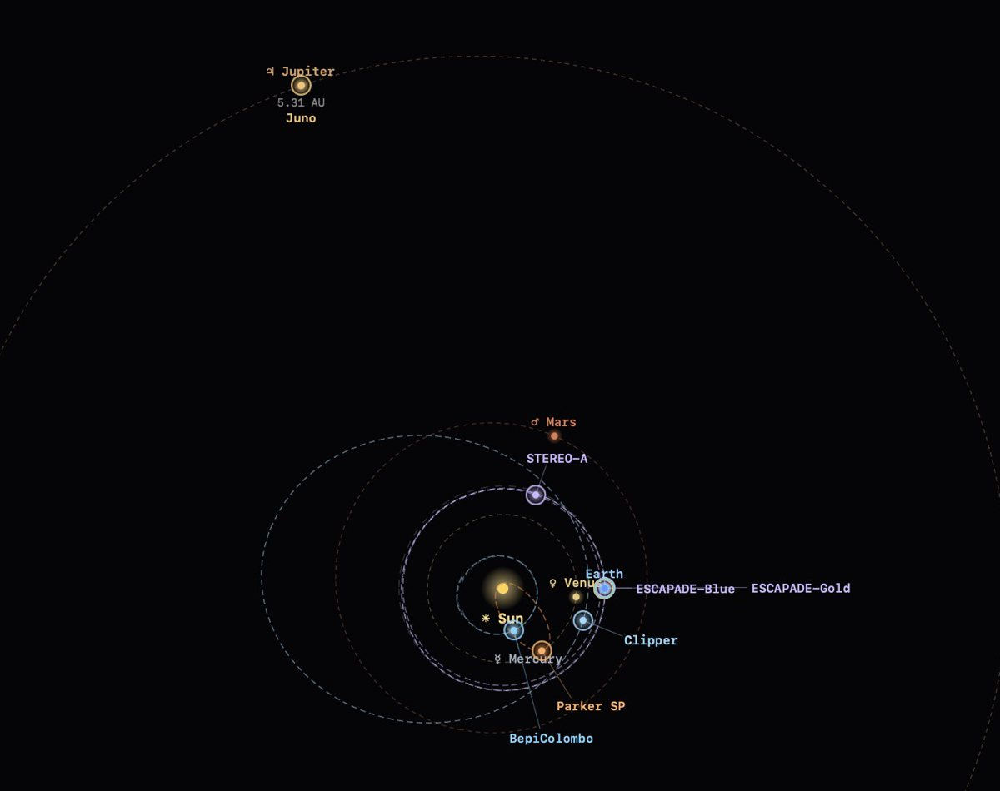

The Mars view, in development: the bow shock and magnetic pileup boundary, MAVEN's orbit and Phobos, on 11 May 2024.
Beyond Earth's magnetosphere
Every planet meets the solar wind in its own way. Mercury has a small magnetosphere of its own, Venus and Mars have only the ones the solar wind induces, the Moon has none, and Jupiter's is the largest of any planet. Helios is growing to show them all, starting with Mars.
Four magnetospheres
Earth's magnetic field holds the solar wind off about ten Earth radii upstream. Mercury's much weaker field manages less than half a Mercury radius above the surface. Venus and Mars have no global field at all, so the solar wind piles up against their upper atmospheres, barely above the ground.
Subsolar distances as Helios draws them: Mercury, Winslow et al. 2013 · Venus, Martinecz et al. 2008 · Earth, Shue et al. 1998 and Jelínek et al. 2012 at 2 nPa · Mars, Vignes et al. 2000. The shapes are schematic.
From orbit to the rovers
The new Mars view sets MAVEN, the Mars Reconnaissance Orbiter, Tianwen-1, Phobos and Deimos around Mars, inside the bow shock of Gruesbeck et al. (2018) and the magnetic pileup boundary of Trotignon et al. (2006). Tianwen-1 brings its magnetometer data.
On the ground, Perseverance and Curiosity sit on their real traverses, each with that sol's raw images, and HiRISE footprints show where the orbiters have looked. The view isn't in Helios 1.0 yet.
Gruesbeck et al. 2018, doi:10.1029/2018JA025366 · Trotignon et al. 2006, doi:10.1016/j.pss.2006.01.003 · Mars globe: Viking MDIM 2.1 (USGS)

No global magnetic field
The solar wind reaches the Moon's surface directly and leaves a wake behind it. For a few days each month the Moon passes through Earth's magnetotail instead. Helios's Moon view shows where it sits against the bow shock and the tail, with ARTEMIS's two probes in lunar orbit and Artemis II's flight. Other spacecraft in lunar orbit come next.

The largest magnetosphere
Jupiter's magnetosphere is the largest of any planet. Its sunward edge usually lies 50 to 100 Jupiter radii out, and Io's volcanoes keep it filled with plasma. Helios's Jupiter view already follows Juno on its orbits around the planet and Europa Clipper on its way there, with the inner fleet. Jupiter's magnetosphere is planned.

The smallest magnetosphere
Mercury has a weak field of its own, and a magnetosphere so small that the planet fills much of it. Its nose sits about 1.45 Mercury radii from the center, only some 1,100 km above the surface (Winslow et al. 2013). Helios already tracks BepiColombo on its way to Mercury. A Mercury view is planned.
Winslow et al. 2013, doi:10.1002/jgra.50237